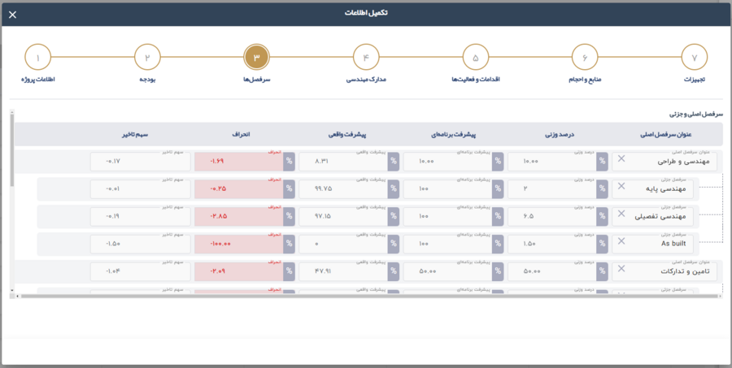
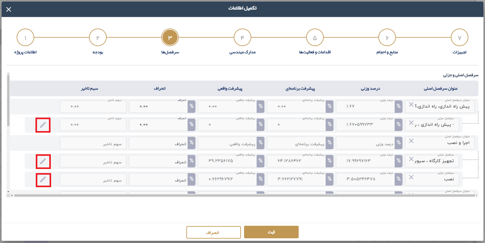

2.1.3. به روز رسانی وضعيت سرفصل ها

در این مرحله اطلاعات سرفصل ها با استفاده از آیکون مداد مقابل زیرسرفصل ها پیشرفت و اطلاعات سرفصل را در این مرحله به روز رسانی می نمایید.

2.1.3. به روز رسانی وضعيت سرفصل ها در این مرحله اطلاعات سرفصل ها با استفاده از آیکون مداد مقابل زیرسرفصل ها پیشرفت و اطلاعات سرفصل را در این مرحله به روز رسانی می نمایید.
 |